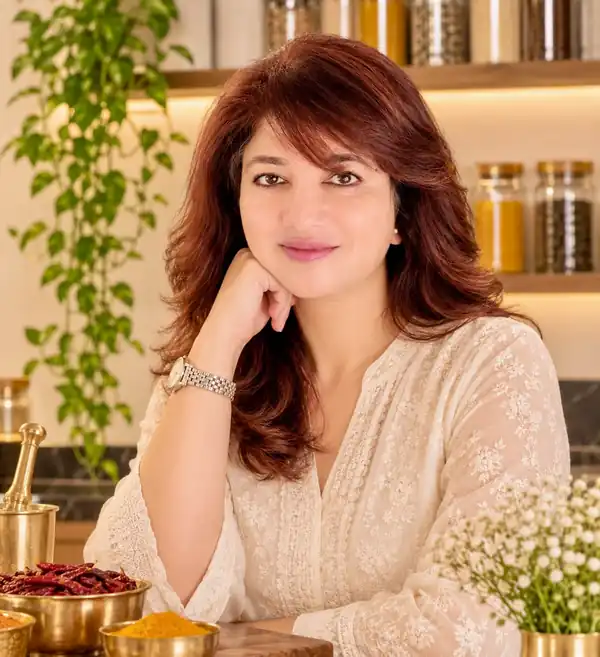

The beginning
Her Grandmother
Where the family story begins: with the knowledge of spices, familiar flavours and the everyday practices of a home kitchen.
The KAYAM SPICES story
A family legacy, carried forward
A story shaped in the family kitchen, passed from grandmother to mother, and carried forward by Suchitra Anikhindi.
Meet the founder

Founder & Owner
Some traditions are not written down. They are remembered, practised and passed from one generation to the next.
The story of KAYAM SPICES began long before the brand itself, in the kitchens where family knowledge and the familiar flavours of home were shared from grandmother to mother, and from mother to Suchitra.
Her family heritage brings together Telugu and Marathi languages, and the food traditions of South India and Maharashtra. These are part of the memories, practices and sense of belonging carried through the family kitchen.
Today, Suchitra carries that inheritance forward through KAYAM SPICES, bringing familiar spice powders, traditional masalas, premixes and podis into one considered pantry.
Explore the KAYAM pantryA tradition passed forward
Each generation receives something precious from the one before it. In this family, the knowledge of spices and the flavours of home became part of that inheritance.
The beginning
Where the family story begins: with the knowledge of spices, familiar flavours and the everyday practices of a home kitchen.
The next generation
The traditions were kept close and passed forward, carrying the family's understanding of food, flavour and togetherness.
The tradition continues
Suchitra brings this inheritance into the present through KAYAM SPICES, sharing a family story with kitchens today.
A legacy is not simply kept. It is lived, shared and carried forward.
The language of our kitchen
Telugu and Marathi are part of the family's cultural voice. Together, they connect the story of KAYAM SPICES with the culinary traditions of South India and Maharashtra.
Telugu carries the words, memories and everyday expressions of one part of the family's culinary heritage. It connects the family story with the flavours and food traditions of South Indian kitchens.
Marathi brings another cultural voice to the family kitchen, alongside the masalas, flavours and food memories of Maharashtra. It is part of the family's wider story and its relationship with food.
The story honours the family's cultural influences without assigning a single regional origin to every spice. Each ingredient has its own history, and each family has its own way of carrying flavour forward.
The KAYAM philosophy
Spices connect ingredients with the memories of the people who prepare them. A familiar aroma can bring back a family meal, a celebration or the comfort of a kitchen remembered from childhood.
KAYAM SPICES brings together familiar spice powders, traditional masalas, premixes and podis in one considered pantry — honouring the place these flavours hold in family life and making them easier to discover.
Discover the collectionKAYAM SPICES
A tradition passed down. A flavour shared forward.